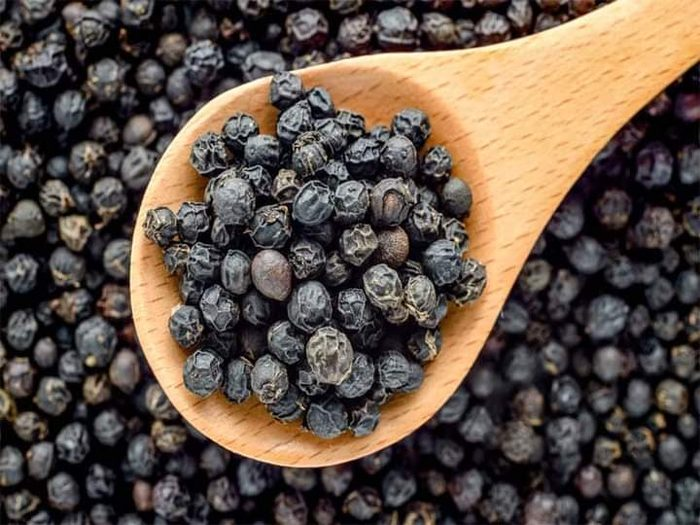
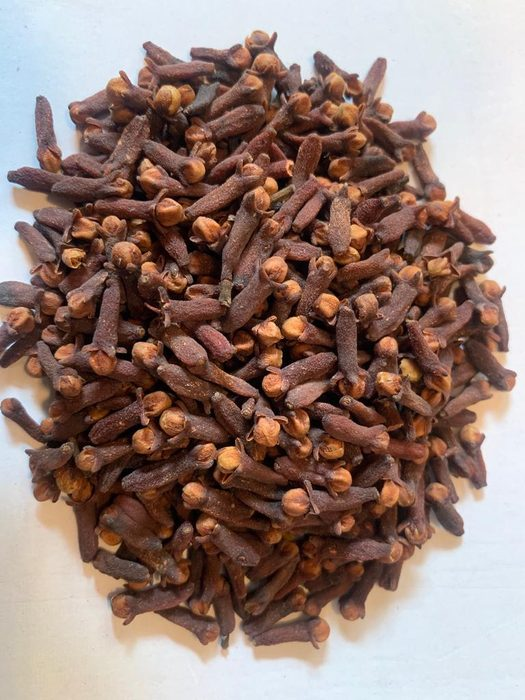
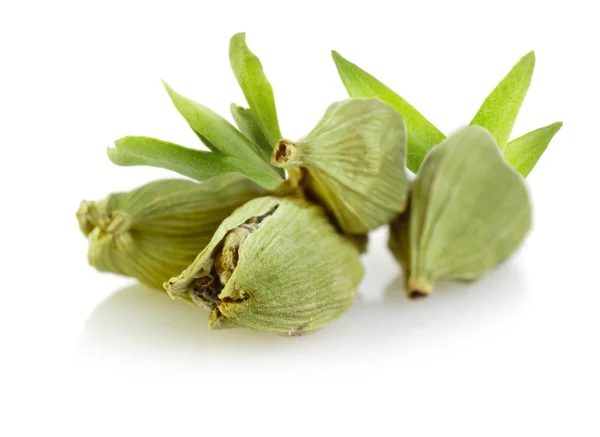
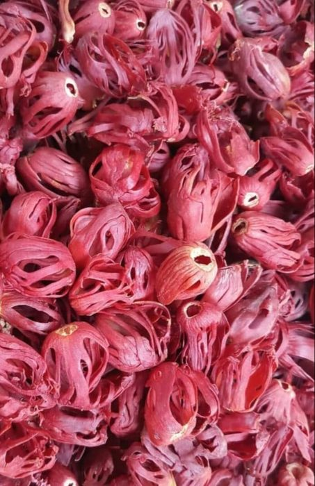

Dhanaa Ceylon Spices LTD
Κορυφαίος εξαγωγέας μπαχαρικών B2B που προμηθεύει κανέλα Κεϋλάνης και τα πιο περιζήτητα μπαχαρικά στον κόσμο σε εισαγωγείς, χονδρεμπόρους και κατασκευαστές τροφίμων στην Ευρώπη, τη Βόρεια Αμερική και όχι μόνο.
Από τα κατάφυτα υψίπεδα της Σρι Λάνκα μέχρι τις πιο απαιτητικές αγορές του κόσμου, το Dhanaa Ceylon Spices χτίστηκε με μια και μόνο πεποίθηση: τα καλύτερα μπαχαρικά αξίζουν τα καλύτερα πρότυπα. Είμαστε ένας εξαγωγικός οίκος διπλής εγγραφής — με έδρα στο Galle της Σρι Λάνκα, με εγγεγραμμένη παρουσία στο Ηνωμένο Βασίλειο.
Κάθε αποστολή που αποστέλλουμε φέρει το βάρος της φήμης μας. Αυτό σημαίνει αυστηρό έλεγχο προμηθευτών, ακριβή αντιστοίχιση απαιτήσεων και πλήρη τεκμηρίωση — από φυτοϋγειονομικά πιστοποιητικά έως ακριβείς αναφορές COA.
Κορυφαία μπαχαρικά που προέρχονται από τις πιο εύφορες περιοχές καλλιέργειας της Σρι Λάνκα, ταξινομημένα και τεκμηριωμένα σύμφωνα με τα υψηλότερα διεθνή πρότυπα.
Premium · Βαθμός Α
Cinnamomum verum — η αυθεντική κανέλα Κεϋλάνης. Πιο απαλό και πιο περίπλοκο από την κασσία, με λεπτές λουλουδένιες νότες και φυσική γλυκύτητα. Διατίθεται ως πτερύγια Alba, C4, C5, τσιπς, σκόνη και φλοιός.
Premium Σρι Λάνκα
Έντονη, αρωματική Piper nigrum. Διαθέσιμες μορφές ολόκληρες, σπασμένες και εδάφους.
Matara · Περιφέρεια Kandy
Syzygium aromaticum — πλούσιο, έντονα αρωματικό. Υψηλή περιεκτικότητα σε αιθέριο έλαιο. Ολόκληρο και σε σκόνη.
Highland Grown
Εξαιρετικό άρωμα. Ολόκληροι λοβοί και σκόνη. Το Mace είναι επίσης διαθέσιμο από το Myristica fragrans μας.
Κάθε παρτίδα προέρχεται από πιστοποιημένο προμηθευτή και αποστέλλεται πλήρως τεκμηριωμένη. Ο ποιοτικός μας έλεγχος δεν είναι ένα πλαίσιο ελέγχου — είναι το θεμέλιο κάθε σχέσης με τον πελάτη που χτίζουμε.
Είτε χρειάζεστε ένα δείγμα, μια άμεση παραγγελία ή μια μακροπρόθεσμη σύμβαση προμήθειας — κάθε έρευνα λαμβάνει μια προσωπική απάντηση εντός 24 ωρών.
Το Dhanaa Ceylon Spices ιδρύθηκε με μια σαφή αποστολή: να φέρει τα καλύτερα μπαχαρικά της Σρι Λάνκα στον κόσμο στις διεθνείς αγορές με την ακεραιότητα και τον επαγγελματισμό που αναμένουν οι αγοραστές υψηλής ποιότητας. Λειτουργούμε ως ένας λιτός εξαγωγικός οίκος με επικεφαλής ειδικούς — εγγεγραμμένος στη Σρι Λάνκα ωςDhanaa Spicesκαι στο Ηνωμένο Βασίλειο ωςDhanaa Ceylon Spices LTD.
Το μοντέλο μας βασίζεται σε ένα προσεκτικά ελεγμένο δίκτυο προμηθευτών μπαχαρικών από τη Σρι Λάνκα — ο καθένας πιστοποιημένος σύμφωνα με τα πρότυπα FDA, HACCP, EU GMP και ISO. Όταν έρχεται η απαίτηση ενός αγοραστή, την αντιστοιχίζουμε στον προμηθευτή που είναι καλύτερα εξοπλισμένος για να πληροί αυτήν την ακριβή προδιαγραφή, διαχειριζόμαστε τις προμήθειες για λογαριασμό σας και συντονίζουμε την τεκμηρίωση και την επιμελητεία μέχρι την παράδοση. Αναλαμβάνουμε τα πάντα, ώστε οι αγοραστές μας να λαμβάνουν απρόσκοπτη, διαφανή, αξιόπιστη προμήθεια.
Αυτό που διακρίνει το Dhanaa είναι η δέσμευσή μας για διαφάνεια. Κάθε αποστολή συνοδεύεται από ένα πλήρες πακέτο τεκμηρίωσης — Πιστοποιητικό Ανάλυσης, Φυτοϋγειονομικό Πιστοποιητικό, Πιστοποιητικό υποκαπνισμού, Πιστοποιητικό Προέλευσης και πλήρη αρχεία ιχνηλασιμότητας. Πιστεύουμε ότι οι αγοραστές δεν πρέπει ποτέ να κυνηγούν τη γραφειοκρατία.
Να είστε ο πιο αξιόπιστος εξαγωγέας μπαχαρικών B2B από τη Σρι Λάνκα — παρέχοντας εξαιρετική ποιότητα, πλήρη διαφάνεια και αξιόπιστο εφοδιασμό σε επιχειρήσεις τροφίμων σε όλο τον κόσμο.
Να τοποθετήσει τα μπαχαρικά της Σρι Λάνκα - ειδικά την κανέλα Κεϋλάνης - ως παγκόσμιο σημείο αναφοράς για την ποιότητα και να δημιουργήσει το Dhanaa ως τον εκλεκτό εξαγωγικό συνεργάτη για κορυφαίους κατασκευαστές τροφίμων σε όλο τον κόσμο.
Ακεραιότητα σε κάθε συναλλαγή. Ακρίβεια σε κάθε αποστολή. Βιωσιμότητα σε κάθε απόφαση προμήθειας. Συνεργασία σε κάθε αγοραστική σχέση.
Κάθε προϊόν προέρχεται από το δίκτυο πιστοποιημένων προμηθευτών μας, επαληθεύεται σύμφωνα με τα διεθνή πρότυπα ασφάλειας τροφίμων και είναι πλήρως τεκμηριωμένο.
Αρωματικό πιπέρι Σρι Λάνκα. Μορφές ολόκληρες, σπασμένες και εδάφους.
Υψηλή περιεκτικότητα σε αιθέριο έλαιο. Πλούσιο, έντονα αρωματικό ολόκληρο και σε σκόνη.
Μυρωδάτο κάρδαμο λόφου. Ολόκληροι λοβοί και διακοσμημένοι σπόροι.
Ζεστό, πολύπλοκο μοσχοκάρυδο με τη λεπτεπίλεπτη ράτσα αρίλ. Ολόκληρο και σε σκόνη.

Το μαύρο πιπέρι της Σρι Λάνκα είναι βραβευμένο στο διεθνές εμπόριο μπαχαρικών για την υψηλότερη περιεκτικότητά του σε πιπερίνη, η οποία του δίνει έναν πιο έντονο, πιο πικάντικο χαρακτήρα από το πιπέρι από πολλές άλλες προελεύσεις. Καλλιεργείται στις μεσαίες και χαμηλές περιοχές του νησιού και παραμένει ένα από τα πιο σταθερά εξαγόμενα μπαχαρικά της Σρι Λάνκα.
Κάθε παρτίδα προέρχεται από πιστοποιημένους προμηθευτές που ταξινομούνται σύμφωνα με τις προδιαγραφές του ιδρύματος προτύπων της Σρι Λάνκα και αποστέλλεται με πλήρες Πιστοποιητικό Ανάλυσης.

Τα γαρίφαλα της Σρι Λάνκα που καλλιεργούνται κυρίως στην υγρή ζώνη στη μέση της χώρας - στις περιοχές Kandy, Kegalle και Matale - αναγνωρίζονται για την πιο πλούσια περιεκτικότητά τους σε αιθέρια έλαια σε σύγκριση με τα γαρίφαλα από πολλές άλλες χώρες παραγωγής, δίνοντάς τους πιο έντονο άρωμα και γεύση.
Η Σρι Λάνκα είναι σταθερά μεταξύ των δέκα κορυφαίων χωρών εξαγωγής γαρύφαλλου στον κόσμο και κάθε αποστολή που αποστέλλουμε αποστέλλεται με πλήρες Πιστοποιητικό Ανάλυσης και τεκμηρίωση εξαγωγής.

Το κάρδαμο μας, που καλλιεργείται στις λόφους της υγρής ζώνης στη μέση της χώρας, έχει ανοιχτό πράσινο χρώμα και ωριμάζεται χρησιμοποιώντας μια παραδοσιακή μέθοδο επεξεργασίας αχυρώνα που διατηρεί τα αιθέρια έλαια και το διακριτικό του άρωμα μέσω της ξήρανσης.
Κάθε παρτίδα προέρχεται από πιστοποιημένους προμηθευτές σε αυτήν την περιοχή και τεκμηριώνεται με τα ίδια πρότυπα με τα άλλα μπαχαρικά μας.

Το μοσχοκάρυδο και το ευαίσθητο αρίλι του, το μαχαίρι, καλλιεργούνται στις κεντρικές περιοχές της Σρι Λάνκα, Matale, Kegalle και Kandy — με περίπου το 80% της παραγωγής μοσχοκάρυδου του νησιού να προέρχεται μόνο από την περιοχή Kandy. Η Σρι Λάνκα προμηθεύει περίπου το 5% της παγκόσμιας ζήτησης μοσχοκάρυδου και το 7% της παγκόσμιας ζήτησης μοσχοκάρυδου, εξάγοντας σε αγορές όπως η Ινδία, τα ΗΑΕ, οι ΗΠΑ, η Γερμανία, το Πακιστάν και το Ηνωμένο Βασίλειο.
Δεν διαχειριζόμαστε το δικό μας εργοστάσιο — ελέγχουμε την ποιότητα επιλέγοντας προσεκτικά ποιος το κάνει. Κάθε παραγγελία διέρχεται από μια αυστηρή διαδικασία αντιστοίχισης προμηθευτών και επαλήθευσης.
Κάθε προμηθευτής στο δίκτυό μας έχει ελεγχθεί για να κατέχει πιστοποιήσεις που πληρούν και υπερβαίνουν τις διεθνείς απαιτήσεις αγοραστών στις αγορές της ΕΕ, του Ηνωμένου Βασιλείου, των ΗΠΑ και της Μέσης Ανατολής.
Δημιουργήστε τη δική σας επωνυμία μπαχαρικών στη βάση της αληθινής ποιότητας Κεϋλάνης.
Παρέχετε το δικό σας σχέδιο επωνυμίας και συσκευασίας. Συντονίζουμε την κατασκευή, τη συσκευασία και την επισήμανση μέσω του δικτύου πιστοποιημένων προμηθευτών μας σύμφωνα με τις ακριβείς προδιαγραφές σας. MOQ από 500KG ανά SKU. Διατίθενται μορφές λιανικής, χονδρικής και υπηρεσιών τροφίμων.
Προσαρμοσμένες υπηρεσίες σύνθεσης για μείγματα κάρι, μείγματα μπαχαρικών και καρυκεύματα, που ταιριάζουν με πιστοποιημένο συνεργάτη παραγωγής για το γευστικό σας προφίλ και τις προδιαγραφές. Το πλήρες NDA είναι διαθέσιμο πριν ξεκινήσουν οι συζητήσεις.
Τσάντες PP, θήκες κραφτ, γυάλινα βάζα, σάκοι χύμα και προσαρμοσμένες συσκευασίες λιανικής. Συνεργαστείτε με τα αρχεία σχεδίασής σας ή χρησιμοποιήστε τους συνεργάτες συσκευασίας μας για μια ολοκληρωμένη λύση με το κλειδί στο χέρι.
Μορφές λιανικής 25g έως 500g με την ετικέτα σας. Δίσκοι συσκευασίας έτοιμοι για ράφι και σήμανση συμβατή με το λιανικό εμπόριο για τις αγορές της ΕΕ, του Ηνωμένου Βασιλείου και των ΗΠΑ. Σχεδιασμένο για ελκυστικό ράφι σούπερ μάρκετ.
Μορφές υπηρεσιών φαγητού και χονδρικής πώλησης 1 KG έως 25 KG για διανομείς, αλυσίδες εστιατορίων και κατασκευαστές τροφίμων που χρειάζονται χύμα προϊόν καθαρής ετικέτας.
Κάθε παραγγελία ιδιωτικής ετικέτας αποστέλλεται με το πλήρες πακέτο τεκμηρίωσης — COA, Φυτοϋγειονομικό, Υποκαπνισμός και Πιστοποιητικό Προέλευσης. Η επωνυμία σας υποστηρίζεται από πλήρη ιχνηλασιμότητα.
Διαχειριζόμαστε ολόκληρη τη διαδικασία εξαγωγής για λογαριασμό σας — από την αρχική αποστολή δειγμάτων έως την παράδοση κοντέινερ στο λιμάνι σας.
Η αγορά της κανέλας είναι πλημμυρισμένη από κασσία που μεταμφιέζεται σε Κεϋλάνη. Δείτε πώς μπορείτε να προσδιορίσετε το αληθινό Cinnamomum verum, να κατανοήσετε τα όρια κουμαρίνης και να προμηθεύεστε σωστά για τις αγορές της ΕΕ και του Ηνωμένου Βασιλείου.
Απαιτήσεις τεκμηρίωσης, φυτοϋγειονομικοί κανονισμοί, ελάχιστες ποσότητες παραγγελίας και τρόπος αξιολόγησης ενός προμηθευτή — όλα όσα χρειάζεστε πριν από την πρώτη σας παραγγελία.
Γιατί οι κατασκευαστές τροφίμων αναδιατυπώνουν με την κανέλα Κεϋλάνης - την επιστήμη πίσω από την κανέλα χωρίς κουμαρίνη και τις αντιοξειδωτικές ιδιότητες που οδηγούν στην κορυφαία τοποθέτηση.
Γεωγραφία, κλίμα, έδαφος και γενιές γνώσης. Μια εις βάθος ματιά στο γιατί τα νότια και κεντρικά υψίπεδα είναι τα μόνα μέρη για αληθινή κανέλα.
Ποιότητα, τεκμηρίωση, χρόνοι παράδοσης και ιχνηλασιμότητα — τα ερωτήματα που διαχωρίζουν τους επαγγελματίες εξαγωγικούς οίκους από τους άτυπους εμπόρους. Μια πρακτική λίστα ελέγχου για τις προμήθειες.
Πώς οι εισαγωγείς και οι διανομείς δημιουργούν κερδοφόρες μάρκες μπαχαρικών με ιδιωτική ετικέτα χρησιμοποιώντας προϊόντα προέλευσης από τη Σρι Λάνκα — από την τοποθέτηση λιανικής έως τις προδιαγραφές συσκευασίας.
Πηγαίνετε σε σχεδόν οποιοδήποτε σούπερ μάρκετ έξω από τη Σρι Λάνκα και το βάζο με την ένδειξη "κανέλα" είναι, βοτανικά μιλώντας, καθόλου κανέλα - είναι κασσία. Η παγκόσμια ζήτηση καλύπτεται σε μεγάλο βαθμόCinnamomum cassia(κινεζική κασσία) και συγγενικά είδη, ενώ η αληθινή κανέλα,Cinnamomum verum, είναι εγγενής σχεδόν αποκλειστικά στη Σρι Λάνκα. Για τους εισαγωγείς και τους κατασκευαστές τροφίμων, το να γνωρίζουν τη διαφορά δεν είναι μόνο θέμα γεύσης – έχει πραγματικές συνέπειες κανονιστικών ρυθμίσεων και ευθύνης.
Ο φλοιός κανέλας Κεϋλάνης συλλέγεται σε λεπτές στρώσεις και τυλίγεται με το χέρι σε μαλακά, πολυστρωματικά πτερύγια — ανοιχτό μαύρισμα σε χρώμα, χάρτινο και θρυμματίζεται εύκολα ανάμεσα στα δάχτυλά σας. Ο φλοιός Cassia είναι παχύτερος, πιο σκληρός και τυλίγεται ως μονή μπούκλα, που κυμαίνεται από κοκκινοκαφέ έως σκούρο καφέ. Μόλις αλεσθεί σε σκόνη, η οπτική διαφορά εξαφανίζεται, όπως ακριβώς συμβαίνει και με την εσφαλμένη επισήμανση πιο κάτω στην αλυσίδα εφοδιασμού.
Η πιο σημαντική διαφορά είναι η κουμαρίνη, μια φυσική ένωση που είναι ηπατοτοξική (επιβλαβής για το ήπαρ) σε υψηλή, παρατεταμένη πρόσληψη. Η κανέλα κασσίας συνήθως περιέχει2-7% κουμαρίνη, ενώ η κανέλα Κεϋλάνης περιέχει μόνο γύρω0,004–0,02%— αρκετές εκατοντάδες φορές λιγότερο. Οι ευρωπαϊκές ρυθμιστικές αρχές έχουν θέσει όριο κουμαρίνης 2 mg/kg στα τρόφιμα και ανεκτή ημερήσια πρόσληψη (TDI) 0,1 mg ανά κιλό σωματικού βάρους. Πρακτικά, ένας ενήλικας 60 κιλών μπορεί να φτάσει σε αυτό το TDI από μόλις 2 γραμμάρια μέσης κουμαρίνης κανέλας κασσίας την ημέρα - ένα όριο που ξεπερνιέται εύκολα από την τακτική κατανάλωση αρτοποιίας, δημητριακών ή συμπληρωμάτων. Το επίπεδο κουμαρίνης της κανέλας Κεϋλάνης είναι αρκετά χαμηλό ώστε αυτό το ανώτατο όριο σπάνια προκαλεί ανησυχία ακόμη και με την καθημερινή χρήση.
Οποιαδήποτε μάρκα τροφίμων ή συμπληρωμάτων που παρασκευάζεται για καθημερινή ή υψηλή συχνότητα κατανάλωσης — σειρές αρτοποιίας, δημητριακά πρωινού, συμπληρώματα υγείας, λειτουργικά ποτά — ενέχει πραγματικό κίνδυνο αναδιατύπωσης και επισήμανσης εάν η κανέλα στη συνταγή είναι κασσία και όχι Κεϋλάνη. Αυτός είναι ακριβώς ο λόγος που ένα αυξανόμενο μερίδιο κατασκευαστών premium και εστιασμένων στην υγεία σε όλη την ΕΕ, το Ηνωμένο Βασίλειο και τη Βόρεια Αμερική αλλάζουν την προμήθεια κανέλας σε επαληθευμένη προέλευση από την Κεϋλάνη.
Κάθε αποστολή που προμηθεύουμε προέρχεται από πιστοποιημένους προμηθευτές και πλοία με πλήρες Πιστοποιητικό Ανάλυσης που επιβεβαιώνει τα είδη, την υγρασία και την περιεκτικότητα σε κουμαρίνη — επειδή η "κανέλα Κεϋλάνης" θα πρέπει να σημαίνει ακριβώς αυτό.
Η υποβολή της πρώτης σας παραγγελίας εισαγωγής μπαχαρικών από τη Σρι Λάνκα μπορεί να μοιάζει με λαβύρινθο από πιστοποιητικά, incoterms και άγνωστα ακρωνύμια. Ακολουθεί μια πρακτική περιγραφή για το πώς φαίνεται στην πραγματικότητα μια καλά εκτελούμενη εισαγωγή, ώστε να γνωρίζετε τι να περιμένετε — και τι να ζητήσετε — προτού δεσμευτείτε για μια παραγγελία.
Εάν ένας προμηθευτής δεν μπορεί να τα παράγει ως πρότυπο, θεωρήστε το ως προειδοποιητικό σημάδι και όχι ως σημείο διαπραγμάτευσης.
Οι περισσότεροι εξαγωγείς της Σρι Λάνκα ορίζουν MOQ από περίπου 500 KG ανά SKU, κλιμακώνοντας έως και πλήρη δοχεία 20' ή 40' για μεγαλύτερους αγοραστές. Η αποστολή συνήθως αναφέρεται στα FOB (Colombo), CIF ή CFR στη θύρα προορισμού σας, με EXW ή DDP διαθέσιμα κατόπιν αιτήματος. Ζητήστε από τον προμηθευτή σας να αναφέρει ξεκάθαρα τις προσφορές κάτω από ένα Incoterm, έτσι ώστε οι συγκρίσεις κόστους εκφόρτωσης μεταξύ προμηθευτών να είναι στην πραγματικότητα μήλα με μήλα.
Ένας αξιόπιστος εξαγωγέας θα αποστείλει δείγματα πριν από την αποστολή που ταιριάζουν με τον ακριβή βαθμό και τις προδιαγραφές που σκοπεύετε να παραγγείλετε — όχι ένα δείγμα "καλύτερης περίπτωσης" που δεν σχετίζεται με τα πλοία. Εγκρίνετε το δείγμα γραπτώς πριν από την έναρξη της παραγωγής και κρατήστε ένα δείγμα στο αρχείο για σύγκριση με τη μαζική αποστολή κατά την άφιξη.
Το Συμβούλιο Ανάπτυξης Εξαγωγών της Σρι Λάνκα έχει προωθήσει ενεργά την "Pure Ceylon Cinnamon" ως πιστοποιημένη, ανιχνεύσιμη παγκόσμια μάρκα — χρησιμοποιήστε το ίδιο πρότυπο επαλήθευσης κατά την αξιολόγηση οποιουδήποτε εξαγωγέα, για κανέλα ή οποιοδήποτε άλλο μπαχαρικό.
Η φήμη της κανέλας Κεϋλάνης δεν σχετίζεται μόνο με τη γεύση – ένας αυξανόμενος όγκος ερευνών ωθεί τους κατασκευαστές τροφίμων και συμπληρωμάτων να αναδιατυπώσουν ειδικά γύρω από αυτήν. Να τι δείχνουν πραγματικά τα στοιχεία και γιατί η υπόθεση είναι πιο ισχυρή για την Κεϋλάνη παρά για την συνηθισμένη κανέλα κασσίας.
Η κανέλα Κεϋλάνης περιέχει υψηλή συγκέντρωση αντιοξειδωτικών πολυφαινόλης, τα οποία βοηθούν στην εξουδετέρωση του οξειδωτικού στρες στο σώμα - έναν από τους υποκείμενους μηχανισμούς που συνδέονται με τις χρόνιες ασθένειες και τη γήρανση. Είναι ένα μεγάλο μέρος του γιατί το εκχύλισμα κανέλας εμφανίζεται τόσο συχνά σε λειτουργικά τρόφιμα και διατροφικές συνθέσεις.
Η επίδραση της κανέλας στον γλυκαιμικό έλεγχο είναι μια από τις καλύτερα μελετημένες ιδιότητές της. Σε κλινική έρευνα, άτομα με διαβήτη τύπου 2 που έπαιρναν 1, 3 ή 6 γραμμάρια κανέλα καθημερινά είδαν τη γλυκόζη του αίματος νηστείας να μειώνεται κατά προσέγγιση18–29%, παράλληλα με μειώσεις τριγλυκεριδίων περίπου23–30%. Αυτός είναι ένας σημαντικός λόγος που το εκχύλισμα κανέλας εμφανίζεται σε σειρές προϊόντων φιλικών προς τον διαβήτη και μεταβολικής υγείας.
Αυτό είναι το αλιεύμα για το οποίο δεν άκουσαν ποτέ οι περισσότεροι καταναλωτές: η κανέλα κασσίας - ο τύπος στα περισσότερα βάζα σούπερ μάρκετ - περιέχει μια φυσικά υψηλή περιεκτικότητα σε κουμαρίνη (2-7%) που προκαλεί ανησυχία για την υγεία του ήπατος στις ποσότητες που χρησιμοποιούνται στα καθημερινά συμπληρώματα ή στο συχνό ψήσιμο. Το επίπεδο κουμαρίνης της κανέλας Κεϋλάνης είναι περίπου εκατό έως χίλιες φορές χαμηλότερο, γι' αυτό οι ρυθμιστές και οι διατροφολόγοι συνιστούν όλο και περισσότερο την Κεϋλάνη ειδικά για όσους καταναλώνουν κανέλα τακτικά ή σε συμπυκνωμένη μορφή. Λαμβάνετε τα μεταβολικά και αντιοξειδωτικά οφέλη χωρίς την ανταλλαγή κουμαρίνης.
Εάν το προϊόν σας είναι τοποθετημένο γύρω από την ευεξία, τη μεταβολική υγεία ή την καθημερινή χρήση, η σύνθεση με αληθινή κανέλα Κεϋλάνης (Cinnamomum verum) αντί με κασσία είναι τόσο απόφαση ασφάλειας όσο και μάρκετινγκ — η "κανέλα Κεϋλάνης" σε μια ετικέτα σηματοδοτεί όλο και περισσότερο ένα πιο ενημερωμένο, υψηλότερης ποιότητας προϊόν σε αγοραστές που προσέχουν την υγεία τους.
Αυτό το άρθρο προορίζεται για κοινό της βιομηχανίας τροφίμων και της ανάπτυξης προϊόντων και δεν αποτελεί ιατρική συμβουλή. Οι κατασκευαστές που κάνουν συγκεκριμένους ισχυρισμούς για την υγεία θα πρέπει να τους επικυρώσουν σύμφωνα με τους κανονισμούς της αγοράς-στόχου τους και να συμβουλευτούν έναν εξειδικευμένο επαγγελματία διατροφής ή ρυθμιστικές αρχές.
Η αληθινή κανέλα καλλιεργείται εμπορικά στη Σρι Λάνκα εδώ και αιώνες, και παρά τις προσπάθειες να καλλιεργηθεί αλλού, το νησί εξακολουθεί να παράγει τη συντριπτική πλειοψηφία της γνήσιας κανέλας Κεϋλάνης στον κόσμο. Αυτό δεν είναι τυχαίο - έχει να κάνει με την ιστορία, τη γεωγραφία και το έδαφος που είναι πραγματικά δύσκολο να αναπαραχθούν.
Η κανέλα ήταν ένα από τα πρώτα μπαχαρικά που διακινούνταν στον αρχαίο κόσμο, τα οποία μεταφέρθηκαν στη Σρι Λάνκα από Άραβες εμπόρους κατά μήκος των διαδρομών που έφτασαν τελικά στην Ευρώπη. Ο έλεγχος του εμπορίου κανέλας Κεϋλάνης ήταν αρκετά πολύτιμος ώστε βοήθησε να παρακινηθεί η μεγάλη εποχή της θαλάσσιας εξερεύνησης και οι αποικιακές δυνάμεις - οι Πορτογάλοι, οι Ολλανδοί και αργότερα οι Βρετανοί - πολέμησαν επί μακρόν για τα μονοπωλιακά δικαιώματα σε αυτήν. Πολύ πριν από την ύπαρξη του τσαγιού Κεϋλάνης, η κανέλα ήταν το χαρακτηριστικό εξαγωγής της Σρι Λάνκα στον κόσμο.
Η καλύτερη κανέλα προέρχεται από ένα συγκεκριμένο τμήμα της νοτιοδυτικής ακτής της Σρι Λάνκα - διασχίζοντας το Galle, τη Matara, την Kalutara και τη Ratnapura. Αυτή η ζώνη βλέπει θερμοκρασίες περίπου 25–32°C όλο το χρόνο και ετήσια βροχόπτωση 1.750–3.500 mm σε δύο εποχές των μουσώνων, συνθήκες στις οποίες έχει προσαρμοστεί το δέντρο της κανέλας κατά τη διάρκεια των αιώνων. Το έδαφος είναι ένα ελαφρώς όξινο αμμώδες αργιλώδες, πλούσιο σε σίδηρο και μαγγάνιο — αρκετά μαλακό για να εδραιωθούν γρήγορα οι νεαρές ρίζες, αλλά αρκετά πλούσιο σε μέταλλα για να τροφοδοτήσει την ανάπτυξη αιθέριων ελαίων του δέντρου.
Το κλίμα και το έδαφος εξηγούν γιατί η κανέλα αναπτύσσεται καλά εδώ — αλλά η λεπτή, πολυεπίπεδη πτέρνα που καθορίζει την κανέλα Κεϋλάνης είναι το αποτέλεσμα γενεών τεχνικής αποφλοίωσης με το χέρι που πέρασε από οικογένειες «ξεφλουδιστών κανέλας» (salli karayo), μια δεξιότητα που εξακολουθεί να μην μπορεί να αναπαραχθεί πλήρως από το μηχάνημα σε κλίμακα. Αυτή η δεξιοτεχνία, σε συνδυασμό με τις συνθήκες καλλιέργειας, είναι που παράγει τη λεπτή γλυκύτητα και το χαμηλό προφίλ κουμαρίνης που ξεχωρίζει την κανέλα Κεϋλάνης από την κασσία που καλλιεργείται αλλού.
Αυτή δεν είναι απλώς μια γλώσσα μάρκετινγκ — Η κανέλα Κεϋλάνης έγινε το πρώτο προϊόν της Σρι Λάνκα που έλαβε πιστοποίηση Γεωγραφικής Ένδειξης (GI) από την Ευρωπαϊκή Ένωση, προστατεύοντας νομικά το όνομα για την κανέλα που καλλιεργείται και επεξεργάζεται γνήσια στη Σρι Λάνκα. Σήμερα η Σρι Λάνκα αντιπροσωπεύει περίπου το 90% των παγκόσμιων εξαγωγών καθαρής κανέλας, με τις ΗΠΑ και το Μεξικό ως τις μεγαλύτερες ενιαίες αγορές, παράλληλα με την έντονη ζήτηση σε όλη τη Λατινική Αμερική και την Ευρώπη.
Το εμπόριο μπαχαρικών δεν έχει έλλειψη άτυπων εμπόρων που είναι πρόθυμοι να αναφέρουν μια χαμηλή τιμή χωρίς καμία από τις γραφειοκρατικές εργασίες, τις δοκιμές ή την αξιοπιστία που να υποστηρίζουν. Αυτές οι δέκα ερωτήσεις διαχωρίζουν έναν επαγγελματικό εξαγωγικό οίκο από έναν ριψοκίνδυνο — ρωτήστε τες προτού κάνετε κατάθεση.
Εάν ένας προμηθευτής διστάζει σε περισσότερα από ένα ή δύο από αυτά, θεωρήστε το ως απάντησή σας.
Οι έμποροι λιανικής, οι διανομείς και οι επωνυμίες τροφίμων θέλουν όλο και περισσότερο μια σειρά μπαχαρικών που μπορούν να αποκαλούν δική τους — χωρίς να δημιουργήσουν μια επιχείρηση προμήθειας και επεξεργασίας από την αρχή. Η κατασκευή ιδιωτικής ετικέτας από έναν εδραιωμένο εξαγωγέα της Σρι Λάνκα είναι ο τρόπος με τον οποίο οι περισσότεροι από αυτούς φτάνουν εκεί.
Εσείς παρέχετε τη μάρκα — το σχέδιο συσκευασίας, την επισήμανση και τη θέση σας στην αγορά. Αναλαμβάνουμε την προμήθεια, την επεξεργασία, τον ποιοτικό έλεγχο και τη συσκευασία σύμφωνα με τις ακριβείς προδιαγραφές σας. Το αποτέλεσμα φτάνει στον πελάτη σας ως το προϊόν σας, που υποστηρίζεται από γνήσια προέλευση Κεϋλάνης και πλήρη τεκμηρίωση εξαγωγής.
Οι καταναλωτές που ευαισθητοποιούνται για την υγεία γνωρίζουν ολοένα και περισσότερο τη διαφορά μεταξύ της κανέλας Κεϋλάνης και της συνηθισμένης κασσίας — ιδιαίτερα της σημαντικά χαμηλότερης περιεκτικότητας σε κουμαρίνη και του καθεστώτος γεωγραφικής ένδειξης της ΕΕ που προστατεύει νομικά το όνομα Κεϋλάνη. Μια σειρά ιδιωτικών ετικετών που βασίζεται σε αυθεντική, τεκμηριωμένη προέλευση Κεϋλάνης δίνει στην επωνυμία σας μια πραγματική, υπερασπίσιμη ιστορία ποιότητας, όχι απλώς έναν ισχυρισμό μάρκετινγκ.
Είτε λανσάρετε την πρώτη σας σειρά μπαχαρικών ιδιωτικής ετικέτας είτε προσθέτετε κανέλα Κεϋλάνης σε μια υπάρχουσα σειρά, ο πιο γρήγορος τρόπος για να ξεκινήσετε είναι μια συζήτηση για το τι προσπαθείτε να φτιάξετε.
Είτε κάνετε την πρώτη σας παραγγελία είτε θέλετε να δημιουργήσετε μια μακροπρόθεσμη σχέση προμήθειας, απαντάμε σε κάθε ερώτημα προσωπικά εντός 24 ωρών.
"Πολύ καλά προϊόντα. Συνιστάται ανεπιφύλακτα."
— Danushka Kalansooriya
"Καλή εξυπηρέτηση! Συνιστώ ανεπιφύλακτα! Συνεχίστε έτσι."
— Chathuri Dilhara
"Καλό προϊόν, το συνιστώ ανεπιφύλακτα."
— Nethmi Sewwandi
Απαντάμε εντός 24 ωρών με τιμές και διαθεσιμότητα.
Τα MOQ ποικίλλουν ανάλογα με το προϊόν, ξεκινώντας από 250 κιλά για το κάρδαμο και το μοσχοκάρυδο/μασέ και 500 κιλά ανά SKU για τις παραγγελίες κανέλας, γαρίφαλου και ιδιωτικής ετικέτας. Το μαύρο πιπέρι μπορεί να ξεκινήσει από 1 ΜΤ. Πλήρη φορτία εμπορευματοκιβωτίων (20' ή 40' FCL) είναι διαθέσιμα για μεγαλύτερους αγοραστές.
Η τυπική μέθοδος πληρωμής μας είναι μια αμετάκλητη πιστωτική επιστολή που καταβάλλεται εν όψει (Sight LC), που εκδόθηκε υπέρ του Dhanaa Spices. Άλλες μέθοδοι όπως η τηλεγραφική μεταφορά μπορούν να γίνουν δεκτές κατά την κρίση μας — βλ.Όροι & Προϋποθέσειςγια λεπτομέρειες.
Ναί. Αποστέλλουμε δείγματα πριν από την αποστολή που ταιριάζουν με τον ακριβή βαθμό και τις προδιαγραφές της επιδιωκόμενης παραγγελίας σας, ώστε να μπορείτε να εγκρίνετε την ποιότητα πριν ξεκινήσει η παραγωγή.
Κάθε παραγγελία αποστέλλεται με Πιστοποιητικό Ανάλυσης (COA), Φυτοϋγειονομικό Πιστοποιητικό, Πιστοποιητικό υποκαπνισμού, Πιστοποιητικό Προέλευσης, Εμπορικό τιμολόγιο, Λίστα συσκευασίας και φορτωτική ή αεροπορική φορτωτική.
Η περισσότερη «κανέλα» που πωλείται παγκοσμίως είναι η κασσία, ένα διαφορετικό είδος με περιεκτικότητα 2–7% σε κουμαρίνη. Η αληθινή κανέλα Κεϋλάνης (Cinnamomum verum), που καλλιεργείται σχεδόν αποκλειστικά στη Σρι Λάνκα, περιέχει μόνο περίπου 0,004–0,02% κουμαρίνη — διαβάστε την πλήρηΣύγκριση Κεϋλάνης - Κασσίαςγια τις λεπτομέρειες.
Στέλνουμε με FOB Colombo, CIF ή CFR στο λιμάνι προορισμού σας, με EXW ή DDP διαθέσιμα κατόπιν αιτήματος, μέσω 20'/40' FCL, LCL groupage ή αεροπορικών μεταφορών για επείγουσες παραγγελίες.
Ναί. Συντονίζουμε την προμήθεια, την κατασκευή και τη συσκευασία μέσω του δικτύου πιστοποιημένων προμηθευτών μας σύμφωνα με τις προδιαγραφές σας, από 500 KG ανά SKU, με μια κοινή NDA διαθέσιμη πριν συζητηθούν οι λεπτομέρειες της σύνθεσης. Δείτε το δικό μαςΙδιωτική ετικέτα & σελίδα OEM.
Κάθε προμηθευτής στο δίκτυό μας είναι πιστοποιημένος με τα πρότυπα ISO 22000, HACCP και GMP και κάθε παρτίδα ελέγχεται εργαστηριακά από τον πιστοποιημένο παραγωγό για υπολείμματα φυτοφαρμάκων, βαρέα μέταλλα και μικροβιολογική ασφάλεια πάνω από τις απαιτήσεις της αγοράς της ΕΕ, του Ηνωμένου Βασιλείου, των ΗΠΑ και της Μέσης Ανατολής.
Κάθε ερώτημα που υποβάλλεται μέσω της φόρμας επικοινωνίας ή του WhatsApp λαμβάνει μια προσωπική απάντηση εντός 24 ωρών, μαζί με μια λεπτομερή προσφορά.
Τα κεντρικά μας γραφεία και οι εγκαταστάσεις επεξεργασίας βρίσκονται στο Galle της Σρι Λάνκα, με έδρα στο Λονδίνο, Ηνωμένο Βασίλειο. Όλες οι αποστολές φορτώνονται στο λιμάνι του Κολόμπο.
Τελευταία ενημέρωση: Ιούλιος 2026
Αυτή η Πολιτική Απορρήτου εξηγεί πώςDhanaa Ceylon Spices LTDκαιDhanaa Spices(εγγεγραμμένος στη Σρι Λάνκα, Reg. No. 2296018, Maththawala, Meegoda, Wanchawala, Galle 80120, Σρι Λάνκα) — μαζί "Dhanaa", "εμείς", "εμάς" — συλλέγουν, χρησιμοποιούν και προστατεύουν τις πληροφορίες σας όταν επισκέπτεστε αυτόν τον ιστότοπο ή επικοινωνείτε μαζί μας.
Όταν υποβάλλετε τη φόρμα προσφοράς/ερώτησής μας, συλλέγουμε το όνομα και το επώνυμό σας, το όνομα της εταιρείας, τη διεύθυνση email, τη χώρα, το ενδιαφέρον του προϊόντος και το μήνυμα που παρέχετε. Δεν συλλέγουμε στοιχεία κάρτας πληρωμής μέσω αυτού του ιστότοπου.
Δεν πουλάμε τα στοιχεία σας. Το μοιραζόμαστε μόνο με τους παρόχους υπηρεσιών που μας βοηθούν να τρέξουμε αυτόν τον ιστότοπο και να σας απαντήσουμε:
Διατηρούμε αρχεία ερωτήσεων για όσο διάστημα χρειάζεται για να σας απαντήσουμε και να διαχειριστούμε την επιχειρηματική μας σχέση. Όπου μια έρευνα δεν οδηγεί σε μια συνεχή σχέση, τη διαγράφουμε ή την ανωνυμοποιούμε μετά από 24 μήνες. Τα αρχεία που σχετίζονται με ολοκληρωμένες παραγγελίες και αποστολές διατηρούνται για όσο χρονικό διάστημα απαιτείται σύμφωνα με τη φορολογική, τελωνειακή νομοθεσία και τη νομοθεσία περί εξαγωγικών τεκμηρίων της Σρι Λάνκα και του Ηνωμένου Βασιλείου.
Μπορείτε να μας ζητήσετε να αποκτήσουμε πρόσβαση, να διορθώσουμε ή να διαγράψουμε τα προσωπικά στοιχεία που διατηρούμε για εσάς ή να αντιταχθείτε στον τρόπο με τον οποίο τα χρησιμοποιούμε, στέλνοντας emailDhanaaceylonspiceuk@gmail.com.
Αυτός ο ιστότοπος χρησιμοποιεί cookies όπως περιγράφεται σε εμάςΠολιτική cookie.
Ενδέχεται να ενημερώνουμε αυτήν την πολιτική από καιρό σε καιρό. Η πιο πρόσφατη έκδοση θα δημοσιεύεται πάντα σε αυτή τη σελίδα.
E-mail:Dhanaaceylonspiceuk@gmail.com
Dhanaa Ceylon Spices LTD, 128 City Road, Λονδίνο, Ηνωμένο Βασίλειο
Dhanaa Spices, Maththawala, Meegoda, Wanchawala, Galle 80120, Σρι Λάνκα
Τελευταία ενημέρωση: Ιούλιος 2026
Αυτοί οι Όροι & Προϋποθέσεις διέπουν όλες τις προσφορές, τις παραγγελίες και τη χρήση αυτού του ιστότοπου απόDhanaa Ceylon Spices LTD(Αρ. εταιρείας 17185293, Αγγλία & Ουαλία) που συναλλάσσονται μεDhanaa Spices(Αρ. Reg. 2296018, Σρι Λάνκα) — μαζί "Dhanaa". Με το να ζητήσετε μια προσφορά, να κάνετε μια παραγγελία ή να χρησιμοποιήσετε με άλλον τρόπο αυτόν τον ιστότοπο, συμφωνείτε με αυτούς τους όρους.
Οι προσφορές παρέχονται με βάση τις πληροφορίες που υποβλήθηκαν και ισχύουν για 7 ημέρες από την έκδοσή τους, εκτός εάν αναφέρεται διαφορετικά, με την επιφύλαξη της διαθεσιμότητας των αποθεμάτων και των τιμών που επικρατούν στην αγορά για τις πρώτες ύλες.
Οι τυπικές ελάχιστες ποσότητες παραγγελιών είναι όπως αναφέρονται στις σελίδες Προϊόντων και Ιδιωτικής Ετικέτας (από 500 KG ανά SKU), εκτός εάν συμφωνηθεί διαφορετικά γραπτώς.
Ο τυπικός αποδεκτός τρόπος πληρωμής μας είναι αμετάκλητοςΠιστωτική επιστολή πληρωτέα εν όψει (Sight LC), που εκδόθηκε υπέρ του Dhanaa Spices. Καθώς όλη η παραγωγή, ο ποιοτικός έλεγχος και η επεξεργασία εξαγωγής πραγματοποιούνται στη Σρι Λάνκα, η πληρωμή λαμβάνεται σε τραπεζικό λογαριασμό της Σρι Λάνκα, ο οποίος μας επιτρέπει να επεξεργαζόμαστε και να αποστέλλουμε τις παραγγελίες αμέσως. Άλλοι τρόποι πληρωμής (π.χ. τηλεγραφική μεταφορά) μπορεί να γίνουν δεκτοί κατά την κρίση μας και θα επιβεβαιωθούν στην επιβεβαίωση της παραγγελίας σας.
Οι παραγγελίες αποστέλλονται σύμφωνα με τους Incoterms που αναφέρονται στη σελίδα Εξαγωγών μας (FOB, CIF, CFR, EXW ή DDP κατόπιν αιτήματος), από το λιμάνι Colombo, Σρι Λάνκα. Τα χρονοδιαγράμματα παράδοσης είναι εκτιμήσεις και εξαρτώνται από την παραγωγή, την τεκμηρίωση και τα χρονοδιαγράμματα αποστολής.
Κάθε αποστολή συνοδεύεται από Πιστοποιητικό Ανάλυσης (COA) και δικαιολογητικά εξαγωγής. Τυχόν ισχυρισμοί ποιότητας πρέπει να υποβάλλονται γραπτώς εντός 14 ημερών από την άφιξη στο λιμάνι προορισμού, συνοδευόμενοι από αποδεικτικά στοιχεία (π.χ. έκθεση επιθεώρησης, φωτογραφίες).
Τα στοιχεία της ιδιωτικής ετικέτας και της σύνθεσης OEM που κοινοποιούνται σε εμάς αντιμετωπίζονται ως εμπιστευτικά. Μια αμοιβαία συμφωνία μη αποκάλυψης (NDA) είναι διαθέσιμη κατόπιν αιτήματος πριν από την έναρξη λεπτομερών συζητήσεων.
Το Dhanaa δεν ευθύνεται για καθυστέρηση ή αδυναμία εκπλήρωσης των υποχρεώσεών του που προκαλούνται από περιστάσεις πέρα από τον εύλογο έλεγχο του, συμπεριλαμβανομένων φυσικών καταστροφών, απεργιών, πολέμου ή κυβερνητικών ενεργειών.
Στο βαθμό που επιτρέπεται από το νόμο, η ευθύνη του Dhanaa σε σχέση με οποιαδήποτε παραγγελία περιορίζεται στην αξία αυτής της παραγγελίας. Dhanaa δεν ευθύνεται για έμμεσες ή παρεπόμενες ζημίες.
Καθώς όλες οι διαδικασίες παραγωγής και εξαγωγής πραγματοποιούνται στη Σρι Λάνκα, αυτοί οι Όροι διέπονται από τους νόμους της Σρι Λάνκα και τα δικαστήρια της Σρι Λάνκα θα έχουν αποκλειστική δικαιοδοσία για οποιαδήποτε διαφορά.
Ενδέχεται να ενημερώνουμε αυτούς τους Όρους από καιρό σε καιρό. ισχύει η έκδοση που ισχύει τη στιγμή της παραγγελίας σας.
E-mail:Dhanaaceylonspiceuk@gmail.com· WhatsApp/Τηλέφωνο:+94 76 230 7361
Τελευταία ενημέρωση: Ιούλιος 2026
Αυτή η Πολιτική Cookies εξηγεί πώς το Dhanaa Ceylon Spices LTD / Dhanaa Spices ("Dhanaa", "εμείς") χρησιμοποιεί cookies σε αυτόν τον ιστότοπο.
Τα cookies είναι μικρά αρχεία κειμένου που αποθηκεύονται στη συσκευή σας όταν επισκέπτεστε έναν ιστότοπο. Βοηθούν τους ιστότοπους να θυμούνται πληροφορίες σχετικά με την επίσκεψή σας.
Χρησιμοποιούμε το Google Analytics για να κατανοήσουμε πώς χρησιμοποιούν οι επισκέπτες αυτόν τον ιστότοπο (π.χ. ποιες σελίδες προβάλλονται, πόσο καιρό παραμένουν οι επισκέπτες), ώστε να μπορούμε να βελτιώσουμε το περιεχόμενο και τα προϊόντα μας. Το Google Analytics ορίζει τα ακόλουθα cookie:
Δεν χρησιμοποιούμε διαφημιστικά ή μάρκετινγκ cookies.
Μπορείτε να ελέγξετε ή να διαγράψετε τα cookies μέσω των ρυθμίσεων του προγράμματος περιήγησής σας ανά πάσα στιγμή. Μπορείτε επίσης να εξαιρεθείτε από την παρακολούθηση του Google Analytics σε όλους τους ιστότοπους που χρησιμοποιούν το GoogleΠρόσθετο προγράμματος περιήγησης εξαίρεσης από το Analytics.
Ενδέχεται να ενημερώνουμε αυτήν την πολιτική από καιρό σε καιρό. Η πιο πρόσφατη έκδοση θα δημοσιεύεται πάντα σε αυτή τη σελίδα.